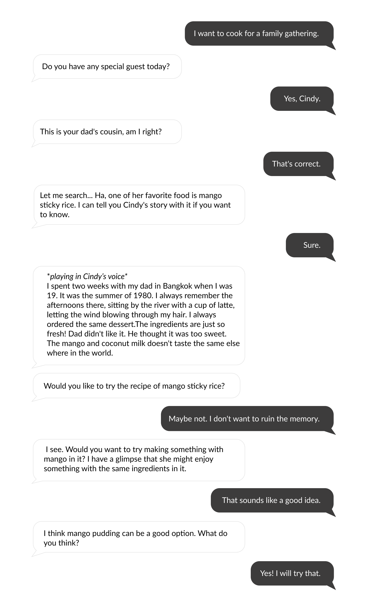
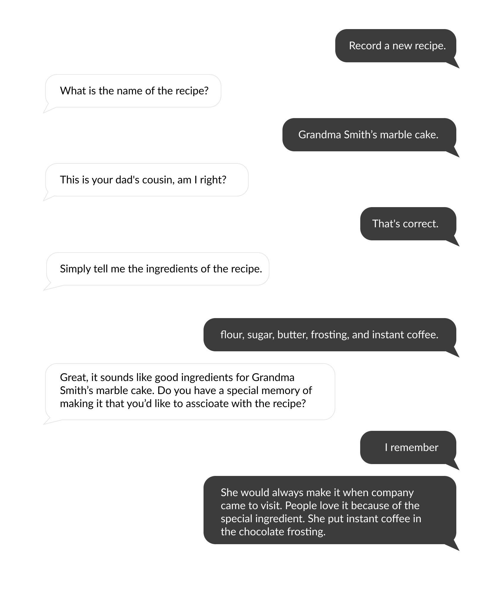
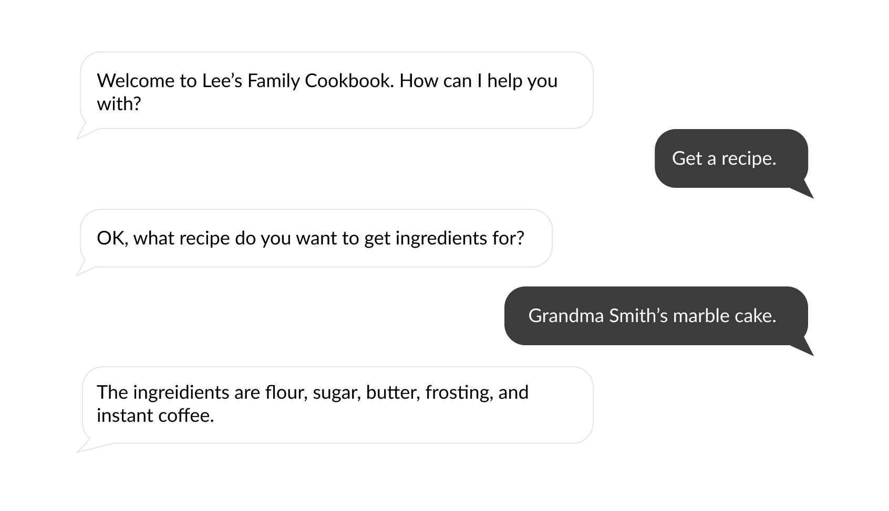

Remember it: A voice assistant for family recipes and memories
My Role CUI & GUI Designer
Time 4 weeks | 2020
Team Sarah Pearman, Laura Fulton, Angelina Thomas
Voice assisiant that remembers.
Design Brief: Build a conversation that contains each of these subtasks: Remember, Tell Me, and Show Me. Consider the context and users you are designing for and bring in the very human elements of time and memory, given the limitations of text, limitation of text, utterances, and spreadsheets for capturing enough for a CUI to access and use in repeated interactions with the same user.
Scope
▪️ Transition family recipes from physical to auditory format
▪️ Capture memories associated with recipes to preserve stories for generations to come
Why a CUI
hands-free
document while cooking

voice of family members
Using visuals to supplement conversational experience
We created minimal GUI to assit and enhance users’ cooking experience. Adaptative on smart watch and mobile ends.
User
Food has always been important for Lisa’s family, and she wants to save as many family recipes as she can. She also wants to make sure she doesn’t forget the stories and memories attached to those foods and the special family gatherings where those foods were eaten.
Tell Me...
Making Natural Conversations
Our goal is to design engaging conversations associated with food and family memories, and it is more than an audio cooking instructions. Here are some of our strategies:
▪️ Switch tones. Use a different voice to share a piece of memory as if it was the person telling his/her personal story.
▪️ Apply the 4 modes of conversations (controlling, guiding, delegating, and collaborating) based on the paper “What is conversation?” written by Hugh Dubberly and Paul Pangaro.
sample dialogs in 4 modes:
-



...but also letting computers understand you
In each speech block, user’s inputs are broken down into intents, utterances and slots for the program to process. Intents are user’s goals, utterances are specific ways to phrase one intent, and slots are additional variables for the program to understand the information. Here are some examples:
| Intents | Utterances & Slots |
|---|---|
| cook for family events | I want to cook for {fam_event}
What is a good recipe for {fam_event} I want to prepare food for {fam_event} can you find me a recipe for {fam_event} |
| pick a recipe with X ingredient | pick a recipe that has {ingredientType} in it
can you pick a recipe for me that has {ingredientType} in it i want a recipe with {ingredientType} in it find a recipe with {ingredientType} in it |
| add a recipe | save a new recipe
record a new recipe |
Store and retrive data
We solved the memory problem using Google Sheets.
Show me
If you don't remember what the CUI just said...
Follow the recipe step by step on your smart watch!
If you are using your phone,
don't forget to take a family picture with your homemade food!
Reflections
· Due to the limitations of speech recognition, we have to keep the user’s reply short and concise. It might not be the case in real life interaction.
· Conducting user testings to evaluate the CUI’s ability in coping with errors, and possibily collect some more compelling memories associated with food that people love to pass on ; )